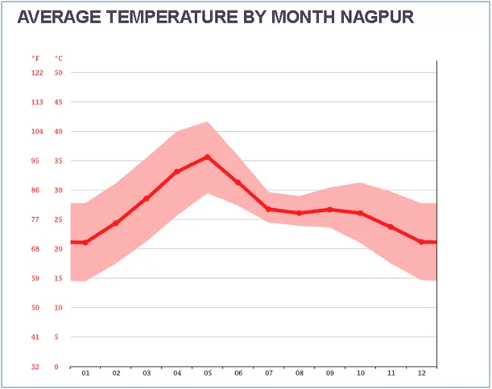
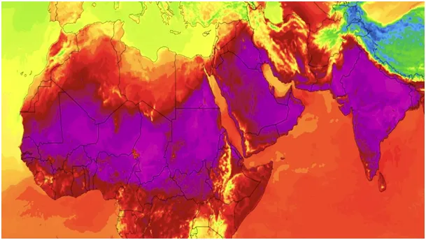
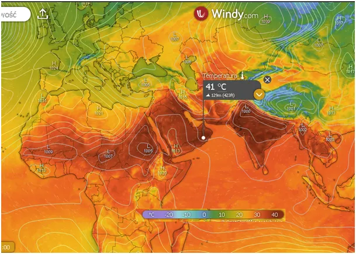
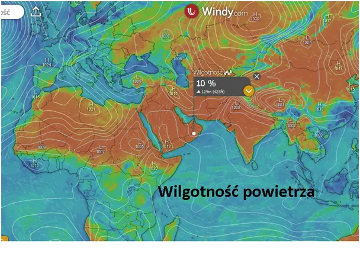

Jak jedzenie papryki i pieprzu rozgrzewa naszą planetę, albo jak wygrać wybory obiecując podwyżki podatków.
Jak co roku na przełomie kwietnia i maja w Indiach temperatury przekraczają 40 st. C, aby spaść w czerwcu wraz z nadchodzącymi deszczami monsunowymi. Jest to idealny moment, aby klimatyści wyciągnęli mapki termiczne z nowym, fioletowym kolorem, jak pierwsza mapka z serwisu twojapogoda.pl.

Ten fiolet został pożyczony z mapek zimowych, gdzie stosuje się go do niezamarzniętego oceanu z wodą o temperaturach ujemnych. W klasycznej meteorologii po kolorze czerwonym używa się brązu dla temperatur pow. 40 st. C, jak na mapce drugiej. Fiolet to kolor smutny, żałobny idealnie pasuje do skrajnie zimnego oceanu, ale w okresie ciepłym doskonale zwraca uwagę i wzmacnia wrażenie katastrofy.

Tymczasem przy wysokich temperaturach w tych rejonach powietrze jest skrajnie wysuszone, jak na mapce trzeciej, gdzie kolor brązowy to zaledwie 10% wilgotności. Jest to komfortowa sytuacja dla organizmu, bo mała zawartość wody w powietrzu oznacza więcej tlenu, zgodnie z prawem, że ilość cząstek gazu w danej objętości jest stała. O wiele bardziej uciążliwy jest upał 30 st. C w Polsce przy wysokiej wilgotności, co jest normą. Wtedy doświadczamy uczucia duszności. Rozrzedzone już z powodu temperatury powietrze ma w sobie mniej tlenu, bo cząsteczki wody zajmują jego miejsce. Razem spadek dostawy tlenu do organizmu daje taki sam efekt jak przeniesienie się w góry na wysokość 1000 metrów, osoby o słabej kondycji odczuwają to wyraźnie. Zatem nie sama temperatura a wilgotność względna ma znaczenie.

Dodatkowo na południu ludzie dostosowują temperaturę swojego ciała do otoczenia podwyższając ją pikantną dietą. Zajadając się chili i pieprzem można o stopień, dwa zmniejszyć różnicę temperatury ciała w stosunku do otoczenia, dodatkowo niszczymy też ewentualne pasożyty układu pokarmowego występujące naturalnie w tamtejszym klimacie.

Media elektroniczne nie opuszczają swych widzów ani na chwilę, trudno dziś w pociągu, czy tramwaju spotkać kogoś niezapatrzonego w telefon, w warszawskim metrze spotykam ekscentryków z książkami, jednak w większości czytają oni treści równie toksyczne, jak Internet. Liczba zmanipulowanych jest już tak wysoka, że nowych klimatystów już trudno pozyskać, jedyne, co zostaje to u obecnych podnosić poziom stresu i poczucia winy. Taki człowiek godzi się potem na dodatkowe obciążenia bez słowa, a nawet z radością, podobnie jak obecny elektorat postępowców. Jeden z kandydatów na prezydencki urząd obiecuje znaczne podniesienie wydatków na obronność, co daje poczucie większego bezpieczeństwa straszonego od 3 lat wojną ludu.
Paweł Klimczewski